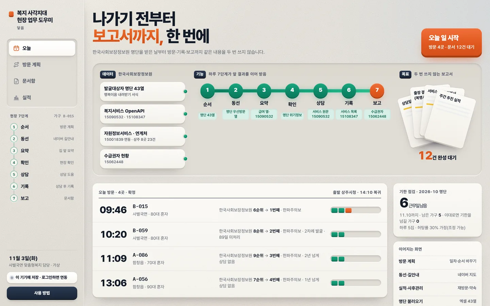
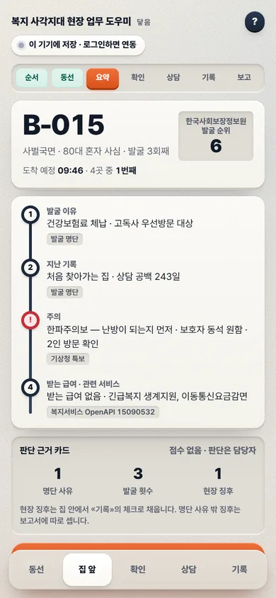
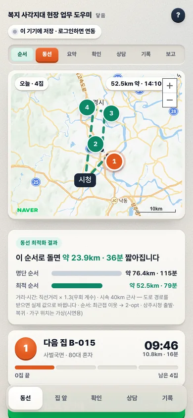
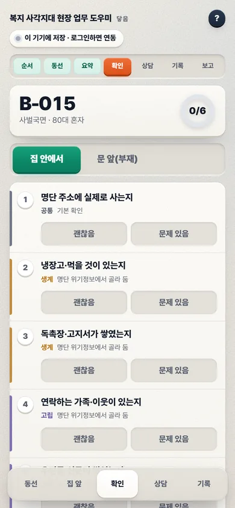
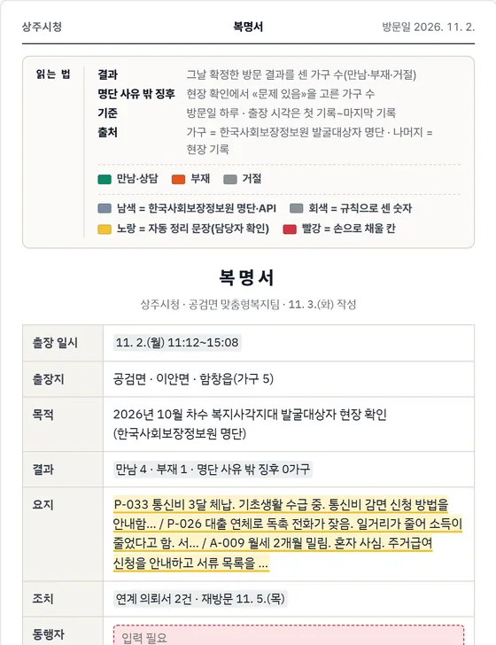

01 / 08PC · 아침
오늘
오늘 갈 집과 도착 시각, 처리 기한까지 남은 근무일, 만들 문서가 첫 화면에 모입니다.
오늘 일 시작 · 방문 · 문서 대기
PC · 오늘
폰 · 집 앞아침 사무실에서 집 앞을 거쳐 저녁 보고까지 여덟 장면. 모두 지금 열리는 실제 화면입니다.
오늘 갈 집과 도착 시각, 처리 기한까지 남은 근무일, 만들 문서가 첫 화면에 모입니다.
오늘 일 시작 · 방문 · 문서 대기오늘 갈 집이 네이버 지도에 순서대로. 명단 순서와 최적 순서의 거리·시간을 견주고, 길안내는 단추 한 번.
최적화 전후 비교 · 네이버 지도 길안내일차마다 같은 날 묶인 집을 가까운 순서로. ▲▼로 바꾸거나 빼면 도착 시각과 거리가 다시 계산되고, 확정하면 폰에 나타납니다.
일차 · 순서 · 확정차 안에서 30초. 명단에 오른 이유, 지난 기록, 주의할 점, 받는 급여를 읽고 들어갑니다.
발굴 이유 · 지난 기록 · 주의 · 받는 급여물어볼 순서가 카드로 넘어가고, 받을 수 있는 서비스는 원문 요약으로 곁에. 고른 것은 기록 칸으로 넘어갑니다.
질문 카드 · 서비스 원문 요약 · 선정 결정 아님만남 · 부재 · 거절을 고르면 앞에서 고른 징후와 연계 후보가 이미 채워져 있습니다. 1분 말하거나 몇 줄 적고 확정.
음성 원본은 남기지 않음복명서 · 상담일지 · 연계 의뢰서 · 주간 실적이 대기합니다. 만들기 → 받기 두 번, A4 인쇄도 바로.
한글(hwpx) · 엑셀 · 인쇄·PDF명단 몇 가구를 찾아가 몇 가구와 상담했는지, 부재로 다시 갈 집과 약속한 날까지 한 화면에.
차수 실적 · 다시 갈 집명단 순서 그대로 돌 때와 최적 순서로 돌 때를 나란히 놓습니다. 상주시청 출발·복귀 기준.
계획은 PC에서, 방문은 폰에서. 같은 계정이면 따로 보내지 않아도 맞춰집니다.

같은 계정으로 로그인하면 PC에서 확정한 계획이 폰 동선에, 폰에서 남긴 기록이 PC 문서함에 실시간으로 반영됩니다.
폰은 아래 단추만 따라가면 됩니다. 한 손으로, 줄마다 한 번.
1집 앞발굴 이유 · 지난 기록 · 주의 · 받는 급여.

2확인명단 위기정보에 맞춘 줄마다 «괜찮음» 또는 «문제 있음».
3상담질문 카드와 받을 수 있는 서비스 원문 요약.
4기록채워진 칸 확인, 1분 말하기 또는 몇 줄 적기.
현장 기록이 결재 양식 문서로 모입니다. 개인정보 4칸은 적지 않고 가구 번호·읍면만 씁니다.

명단 몇 가구를 찾아가 몇 가구와 상담했는지, 다시 갈 집은 어디인지.
한국사회보장정보원 공공데이터와 보조 4기관 7종. 시연 가구는 모두 가상입니다.
로그인 없이 시연 모드로 열립니다. 명단·가구는 모두 가상입니다.